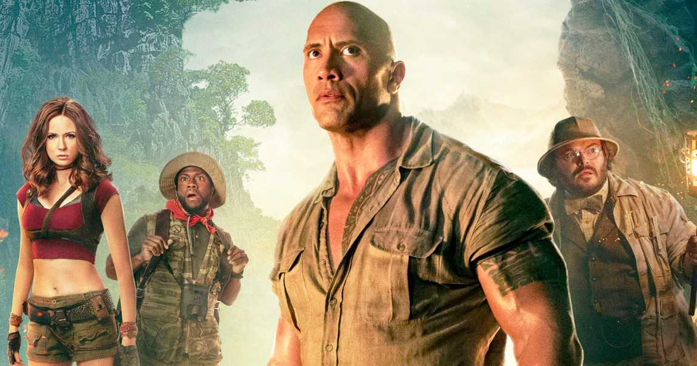
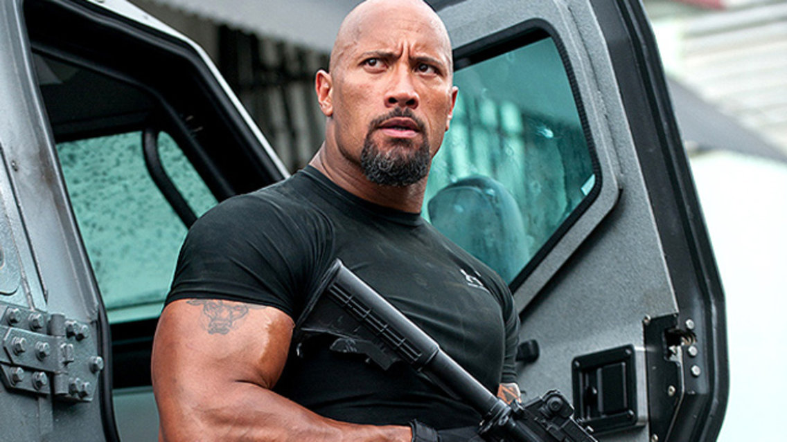
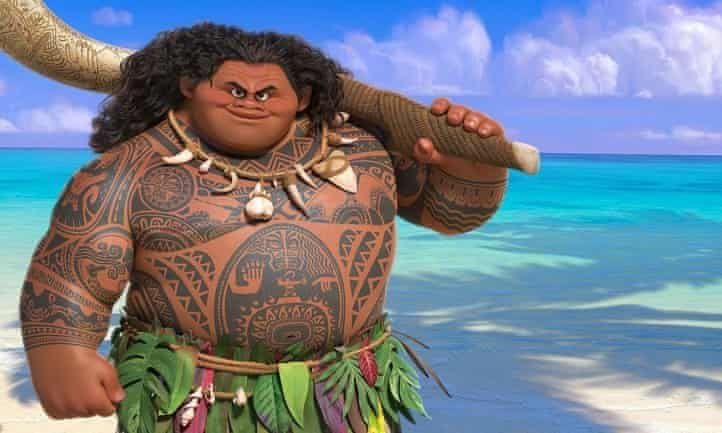
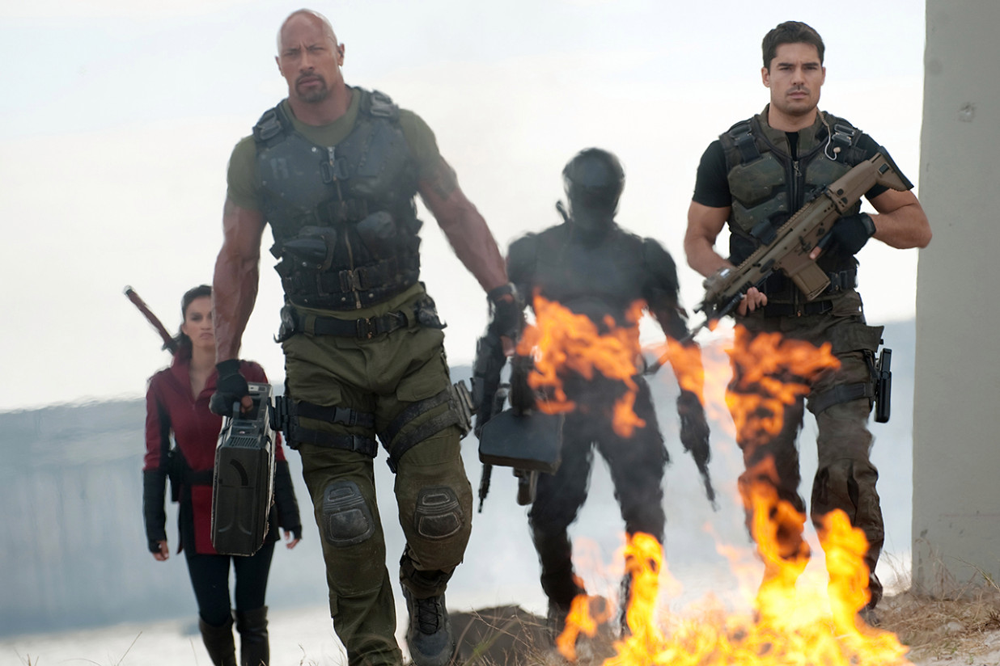

Career
Short Intro
Dwayne Douglas Johnson (born May 2, 1972), also known by his ring name The Rock, is an American actor, producer, and semi-retired professional wrestler. Johnson was a professional wrestler in the WWE for eight years prior to becoming a full-time actor in 2005. Since then, he has become one of the top-grossing and highest-paid actors in the world.
Skills/Talents
- Acting
- Producing
- Wrestling
- Football
- Kicking Ass
Published Works
Movie Roles

Jumanji - Spencer

Fast & Furious - Hobbs

Moana - Maui

G.I. Joe: Retaliation - Roadblock
Places Lived
- Haywood, California, USA
- Grey Lynn, Auckland City, New Zealand
- Charlotte, North Carolina, USA
- Hamden, Connecticut, USA
- Honolulu, Hawaii, USA
- Nashville, Tennessee, USA
- Bethlehem, Pennsylvanina, USA
- Southwest Ranches, Florida, USA
Collaborators
Awards
Acting
- Best Vocal Ensemble in a Feature Film - Behind the Voice Actors Awards (2017)
- Action Star of the Year - CinemaCon, USA (2012)
- Entertainer of the Year - Image Awards (2017)
- Favorite Movie Actor - Kids' Choice Awards (2018)
- BFFs (Best Friends Forever) - Kids' Choice Award (2017)
- Favorite Male Butt Kicker - Kids' Choice Awards (2013)
- Favorite Premium Series Actor - People's Choice Awards, USA (2017)
- Choice Movie Actor: Comedy - Teen Choice Awards (2018)
- Choice Movie Actor: Fantasy - Teen Choice Awards (2017)
- Film: Choice Sleazebag - Teen Choice Awards (2001)
- Worst Supporting Actor - The Stinkers Bad Movie Awards (2001)
- Star on the Walk of Fame (2017)
Pop Culture
- No. 5 on Entertainment Weekly's Top 12 Entertainers of the Year 1999
- No. 6 on Access Hollywood's Top 10 Celebrities of 2000
- Listed in Forbes Celebrity 100 in 2000
- Listed in People Magazine's 25 Most Intriguing People of 2000
- Listed in Entertainment Weekly's 101 Most Influential People in 2000 and 2001
- Listed on E!'s 25 Toughest Stars in 2002
- Listed in VH1's 200 Greatest Pop Culture Icons in 2003
- No. 13 in People Magazine's 50 Favorite TV Stars